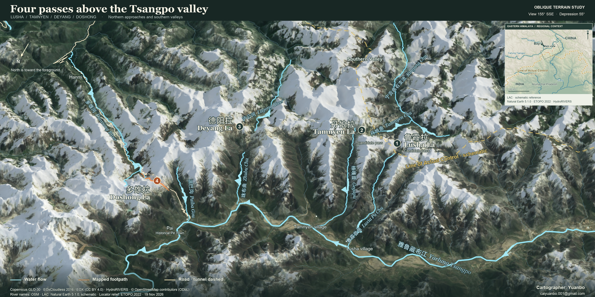
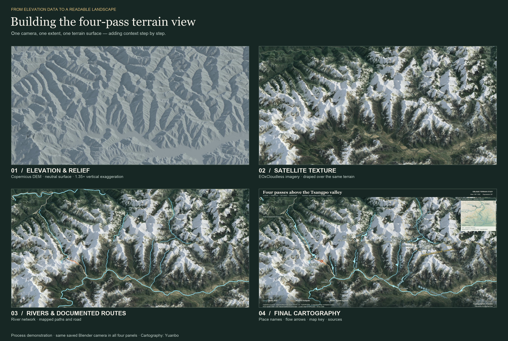

Yonggyap Da · 28 May 1913
“Later in the year it must be a very beautiful spot.”
Bailey, 1957, p. 60. Read the scanned page.
Terrain cartography · Eastern Himalaya
Cross a mountain pass. Enter another river basin. Find more than you came looking for.
Read the crossing
Monsoonal Asia / ecological thresholds
I approach the southeastern Himalaya as a mountainous part of monsoonal Asia, where high elevation and seasonal snow coexist with a strong monsoon influence.
Moisture from the Indian Ocean, including the Bay of Bengal, reaches the region through the summer monsoon. Mountain relief intercepts and redistributes this moisture, while deep valleys channel humid air into the Tibetan Plateau. Research at Mêdog documents this pathway through the Yarlung Tsangpo Grand Canyon. Alongside altitude, slope exposure and seasonal snow, the uneven distribution of moisture helps produce pronounced ecological contrasts across forested slopes, alpine terrain and drier inner valleys. Li et al., 2022.
A pass gives travellers a route through these environmental differences. By connecting valleys, passes allow ecological gradients to be experienced through movement: changes in vegetation and climate become perceptible along a journey. These transitions need not coincide precisely with a saddle or watershed.
Kingdon Ward / Tulung La, 1935
“After crossing the Tulung La, I left the forest region behind me and entered upon the dry treeless plateau.”
F. Kingdon Ward, “Botanical and Geographical Explorations in Tibet, 1935,” published 1936, p. 386. Source details.
Near Jamiri, Ward also described an abrupt transition from pine and oak woodland to Assam rain forest without a visible barrier (p. 406). His observations locate ecological change both beyond a pass and elsewhere along a route. I read these passages as accounts of environmental differences encountered through travel, while distinguishing his 1935 itinerary from Bailey’s crossing of Yongyap La.
Yongyap La / a crossing, then another climb
While reading historical maps, I repeatedly encountered toponyms ending in chu, the Tibetan word for water or river. I use these names as starting points for tracing the valleys and routes of the eastern Himalaya. Tibetan geographical vocabulary.
I use elevation, satellite imagery and historical itineraries to make these transitions visible: a ridge separates the waters, while a pass connects the journeys.
“here we crossed from the basin of the Dibang into that of the Dihang or Tsangpo”
F. M. Bailey, “Exploration on the Tsangpo or Upper Brahmaputra,” The Geographical Journal 44(4), 1914, p. 343. Source details
For Bailey and Morshead, crossing the divide also meant a new problem of movement. The receiving valley led towards the Tsangpo, but its narrow gorge offered no onward trail. They had to turn up a tributary and cross Pungpung La before reaching the settled valley beyond. The itinerary reveals how weather, supplies and local knowledge determined whether people could move through it.
English adaptation of the supplied Chinese account, checked against No Passport to Tibet (1957), pp. 46–48 and 52. This is a paraphrase, with the departure date corrected from the original.
Gyamtso suggested consulting the astrologers about the route. They favoured the Yonggyap valley, which Bailey had also come to prefer after a thaw made the Andra route impassable. The next question was when to travel. Yonggyap La was normally free of snow only in July, August and September, yet the party could not afford to wait for months: food was limited, and an order recalling them might arrive.
The guides warned that beyond Yonggyap La lay an uninhabited valley. They were to descend it to a tributary arriving from the north-east. Although the combined waters formed the Shümo and ran west to the Tsangpo near Rinchenpung Gompa, the gorge was too narrow to offer a practicable route. They therefore had to turn north-east up the tributary and cross Pungpung La.
Bad weather between the two passes could trap them. Gyamtso recalled two earlier parties that had attempted the crossing too soon: some travellers had starved, and the survivors had reached the Tsangpo valley exhausted. Snow was lingering particularly late that year, making an early attempt still more dangerous.
Bailey and Morshead decided to advance with the retreating snowline and wait below the pass for an opportunity. A lama meditating in a cave above Mipi, whose recovery from illness had been aided by the expedition’s doctor, offered to arrange fine weather for the intended crossing and for Pungpung La four days later. Morshead left Mipi on 15 May 1913; Bailey followed on 16 May.
Date check: 7 May marks the first day of the fourth Tibetan month in the calendar discussion on pp. 46–47; it is not the departure date. The distinction between a river connection and a traversable route is also explicit in Bailey’s 1914 account, p. 343. Read the book scan.
Serendipity / finding more along the way
Yonggyap Da · 28 May 1913
“Later in the year it must be a very beautiful spot.”
Bailey, 1957, p. 60. Read the scanned page.
Lunang (鲁朗) · 10 July 1913
“Each day brought new discoveries, new sights, new marvels.”
Bailey, 1957, p. 113. Read the scanned page.
Serendipity is the perspective I bring to these maps: setting out to trace a crossing, then noticing an unexpected clearing, a flower, or a connection between places. A pass opens a route into another drainage system; the journey can disclose more than its original purpose. Bailey’s account offers two distinct moments through which to consider that experience.
Beyond Yongyap La
28 May 1913 · No Passport to Tibet, p. 60
Two days after the crossing, Bailey describes a flat clearing at the confluence of the rivers he calls the Yonggyap and Rirung. He collected iris and other seed, noticed the remains of flowers, and imagined the place later in the season.
This is an encounter in the valley beyond the pass, rather than a view from its summit. The description conveys an attentive pause within a difficult journey.
A later episode near Lunang (鲁朗)
10 July 1913 · recalled in 1957, pp. 112–114
On the approach to Lunang, Bailey noticed blue poppies among alpine flowers. His diary recorded them briefly. Looking back on their later fame, he reflected on how much the expedition had encountered along the way:
This episode belongs to Lunang, later in the expedition. It is not an observation made while crossing Yongyap La. The reflection was written retrospectively, rather than as an expression of his feelings at the moment of seeing the flower.
I use serendipity to describe this openness to finding more than one set out to find. It is my interpretation of the journey and a way of looking at the terrain, rather than a term Bailey uses in these passages or a claim that every pass marks a sharp ecological boundary. These were landscapes already known and travelled by local people; Bailey’s encounters were new to him.
Four passes / northern approaches and southern valleys
Important passes on the China–India Frontier
The wider view compares Luxia La, Tamnyen La, Deyang La and Doshong La with the valleys on either side. An elevated camera keeps both flanks of the ridge in view; rivers and flow arrows help the eye follow each valley away from the crest.

Territorial power / from corridors to controlled crossings
A named pass provides an identifiable reference point for territorial claims. Where routes converge at a crossing, it can also become a site for regulating movement between valleys.
When surveys and boundary documents select ridgelines, watersheds and passes as territorial reference points, they give these features political meaning. Garrisons, checkpoints and permit systems can enforce claims by restricting passage or redirecting travel. Cartographic delineation and the control of access are distinct practices; their combination can turn a route through the mountains into a regulated crossing between jurisdictions.
Jawaharlal Nehru’s parliamentary statement of 15 February 1961 illustrates how a state could use topography to articulate a boundary claim. In explaining India’s position, he invoked the high Himalayan watershed and the location of Talu and Diphu passes. His statement documents India’s territorial reasoning at that time; it does not establish a mutually agreed boundary. Nehru, 15 February 1961.
A division of drainage.
A connection sustained through travel and local arrangements.
A regime deciding who may cross, where and under what conditions.
Changes around Tsari show how border closure could reorganize an existing network. Campbell Cole records the interruption of trade and the Tsari Rongkor pilgrimage following the 1962 conflict and militarized closure. Salt previously obtained from Tibet was subsequently sourced from the Assam plains. Movement was therefore both curtailed and redirected. This evidence concerns a regional trade and pilgrimage network and does not locate checkpoints at the four candidate crossings mapped here. Campbell Cole, 2012, p. 20.
Earlier travel also depended on political authority and permission. Ward waited for a permit before crossing Se La in 1935 (p. 385). The historical question is how national boundary claims and military administration reconfigured such arrangements, changing who could cross and under whose authority. A pass could remain a physical connection between valleys even as access through it was restricted.
The cartographic craft
I treat lighting, relief and surface colour as part of the explanation. Their purpose is to help a reader follow the land from one drainage system to the next.
Oblique light falls across the ridges, separating illuminated slopes from shaded faces. In the Yongyap view, a low southeast light and distance haze bring the foreground forward while easing the distant terrain back. The lighting is illustrative, rather than a reconstruction of the sun on the day of the expedition.
The camera looks across the crest while retaining both valley flanks. Modest vertical exaggeration—1.24× at Yongyap and 1.35× in the four-pass view—helps the ridgelines, incised streams and saddles read together. River colours and the dashed watershed in the Yongyap map make the drainage transition legible.
Satellite texture carries the forest and exposed ground across the terrain. Muted greens and controlled contrast keep wooded slopes from becoming a dark mass. In the four-pass map, 80% satellite colour is blended with 20% elevation tint; the green surface provides landscape context rather than a classified vegetation map.
From data to a readable landscape
The same camera, extent and terrain surface are held throughout: neutral DEM relief, satellite texture, river and route layers, then final annotation. These views were exported from the completed scene to expose its construction.

Extension · Interactive story map
Read more about Bailey’s encounters with the mysterious falls of the Tsangpo. Follow the 1913 journey through expedition maps, photographs and accounts, including the places known through local testimony beyond his direct observation.

Sources & interpretation
Yongyap’s orange route follows the project’s traced historical itinerary and remains approximate. Historical valley names follow Bailey’s account; modern river names retain their mapped sources. In the four-pass study, unresolved identifications remain candidates and no continuous crossing route has been invented for them.